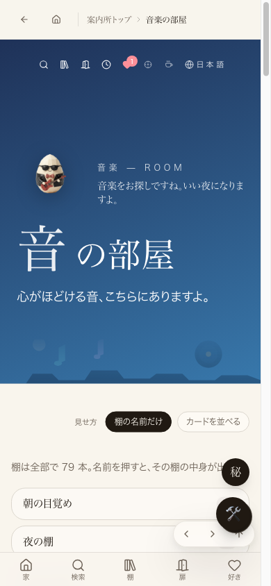
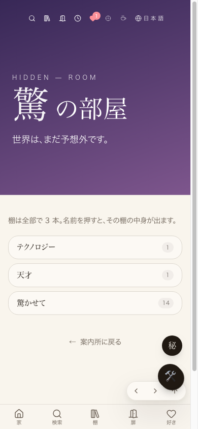

共有資料の一覧
／ 確認ページ #4 驚の部屋・美の部屋を「音楽の扉」と同じ形に統一
#4 驚の部屋・美の部屋を「音楽の扉」と同じ形に統一
2026-09-09 実装・main合流・本番(GitHub Pages)反映まで実測確認
驚の部屋・美の部屋の入口ページを、音楽の扉と同じ「棚の名前だけを並べて、押すとその棚の中身が出る」形式に統一しました。以前は棚が縦にジャンプバー＋横スクロールでバーッと並んでいましたが、音楽の扉と同じ縦グリッド形式になりました。
② 数字
3
驚の部屋に表示される棚の本数
0件
美の部屋の棚コンテンツ（表示形式は直したが中身は別問題・未着手）
③ 実データでのスクリーンショット
お手本：音楽の扉（本番・スマホ幅）

結果：驚の部屋（本番・スマホ幅）※修正前の画面は既に上書きされ再現不可のため、お手本との横並び比較で示す

④ 押せるリンク
本番：驚の部屋
https://joy-relief-station.lovable.app/hidden/wonder
本番：美の部屋
https://joy-relief-station.lovable.app/hidden/beauty
見本：音楽の扉
https://joy-relief-station.lovable.app/world/music
⑤ 何をどう確かめたか
確認項目
結果
棚の名前だけを並べる形式
yes
押すとその棚の中身ページへ
yes
美の部屋の棚コンテンツ追加（範囲外）
no